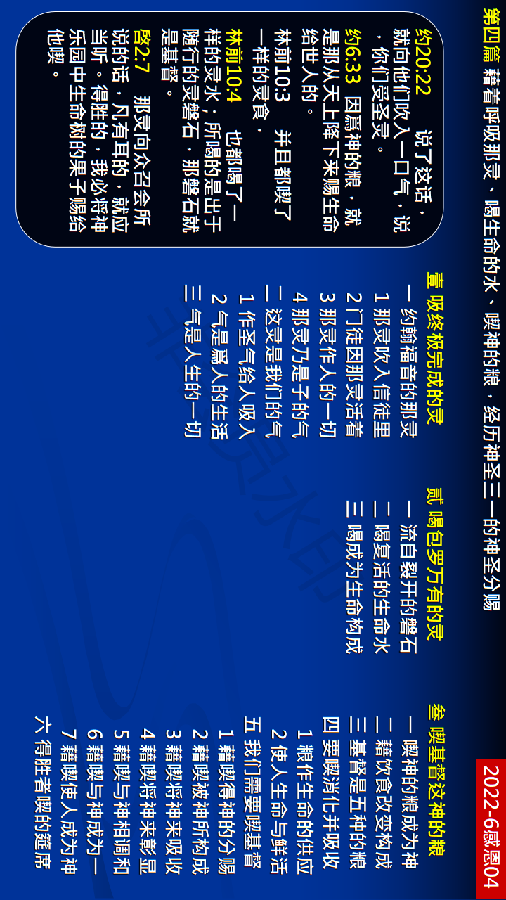

第四篇 借着呼吸那灵、喝生命的水、吃神的粮，经历神圣三一的神圣分赐
前言
我们不仅要认识宇宙惟一永远的福分─三一 神分赐到我们里面，更要进入、经历、享受 并活出这福分。然而，我们若要进入这福分， 就需要活在神圣的罗曼史里，我们若爱主耶稣，就会向祂的分赐敞开。我们若要活在这 福分里，就需要打开那已经装置在我们里面 的开关─生命之灵的律。本篇信息乃是说到 这福分的内涵，就是藉着呼吸、喝与喫，把 我们带到这福分的经历里。
真理要点(鸟瞰)
壹 吸终极完成的灵：①约翰福音的啓示②这灵是我们的气③气对我们是一切
贰 喝包罗万有的灵：①流自裂开的磐石②复活里的生命水③我们凭喝吸取主
叁 喫基督这神的粮：①我们藉喫成为神②神经纶里的心意③基督是我们的粮 ④喫消化并吸收粮⑤我们需要喫基督⑥主给得胜者赏赐
经历应用(操练)
我们要改一个观念，不仅早晨我们可以祷读两节经节， 就是在整天的生活里，我们也可以常常呼喊主名。我们 一接触主话，或呼喊主名，供应就来了。无须受一些教导的影响，以为必须禁睡又禁食，只要简单的、经常的 呼喊主，就自然的会有主生命的供应，常常呼喊主名， 呼吸祂，喝祂，藉着圣经的话喫祂，并且住在祂里面， 得着祂的供应，我们也就在神的生命里长大了。
负担
当我们这样享用神圣的分赐，我们就会有五种结果显出来。第一，我们里面会涌流出活水的江河。(约七 38~39。) 第二，我们会结出生命的果子。(约十五 5，16 上。)第三，我们会去餧养羊群中的小羊。(约二一 15，十 16。) 第四，我们就成为基督的新妇，基督的身体，作基督的扩大。(约三 6 下，29~30。)第五，我们作经过过程之三一神的生机体，彰显三一神自己。(约十五 1，5，8。)这就是我们基督徒的生活，也是召会生活。
